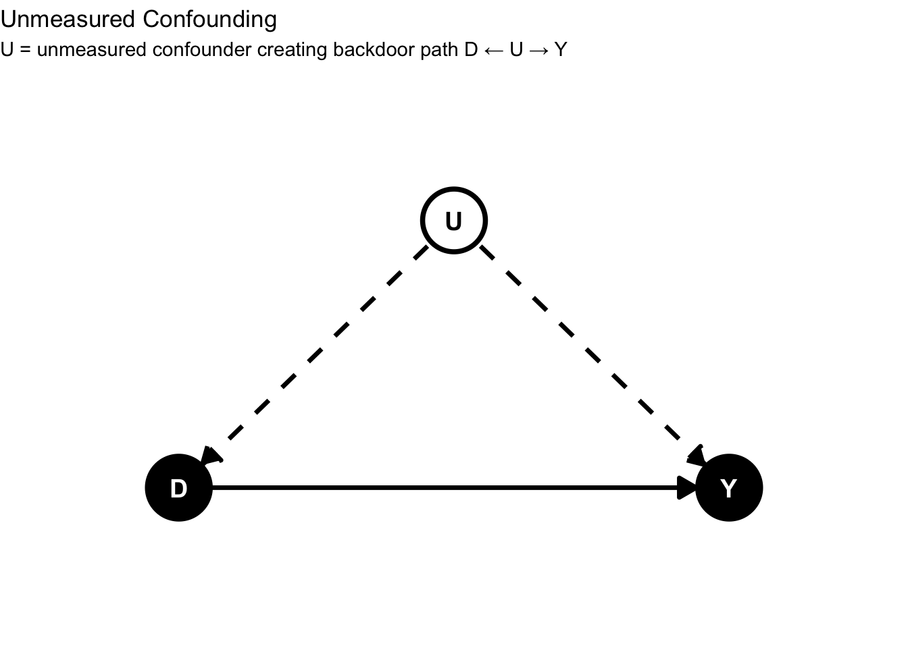
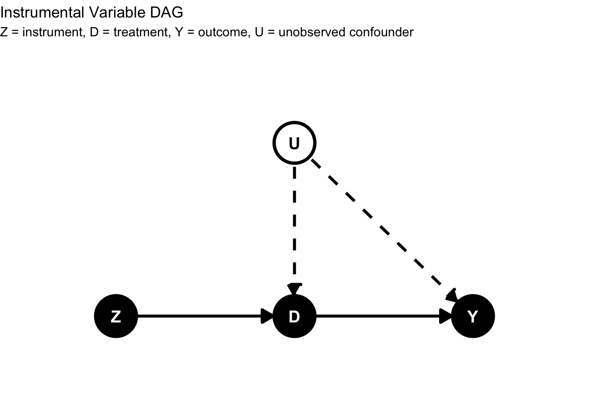

Instrumental Variables
Abstract
This guide covers the intuition, mechanics, and implementation of instrumental variables (IV) design. We will discuss applications in both experimental settings, where the instrument is randomized by the researcher, and observational studies, where we rely on “natural experiments” or policy shocks. We will also cover diagnostic tests to assess the validity of your instrument.
Keywords
instrumental variables, causal inference, experimental data
Introduction
Causal inference fundamentally seeks to distinguish true treatment effects from the influence of confounding factors. When treatments are self-selected or non-random, standard correlations fail to identify causality. Instrumental Variables (IV) offer a powerful solution to this problem by separating the variation in treatment that is driven by exogenous forces from the variation driven by confounders. By leveraging an “instrument”—a variable that affects the treatment but has no direct effect on the outcome—researchers can isolate a clean source of variation, allowing for the estimation of causal effects even in the presence of unobserved confounding.
Experimental Studies
In experimental studies, the distinction between treatment assignment and treatment receipt is crucial. Even when treatment is randomly assigned, some participants may not take it—a problem known as non-compliance. As a result, a simple comparison of assigned groups yields the Intention-to-Treat (ITT) effect, which measures the impact of the offer of treatment rather than the treatment itself.
To estimate the effect of actually taking the treatment, we use the random assignment as an instrument. Since assignment is randomized, it is exogenous to potential outcomes but strongly predicts treatment receipt. IV uses this structure to isolate the causal effect for the subpopulation whose treatment behavior is determined by their assignment—known as compliers.
Experimental Example: Get-Out-The-Vote
Consider a Get-Out-The-Vote experiment where a researcher randomly assigns households to receive a canvassing visit or phone call, denoted as assignment \(Z\). The intended treatment is exposure to the canvasser, \(D\), and the outcome \(Y\) is whether the person votes.
Non-compliance arises when some assigned households are not reached or some reached do not change their behavior. Here assignment \(Z\) is an instrument for actual exposure \(D\). \(Z\) affects \(D\) but is plausibly exogenous to potential voting outcomes by design.
Observational Studies
In observational studies, the treatment or variable of interest is often endogenous—that is, determined by self-selection or unobserved factors that also affect the outcome. This confounding makes standard regression estimates unreliable.
To address this, researchers look for an exogenous source of variation—a “natural experiment” or instrument—that influences the treatment but affects the outcome only through that treatment. By isolating the variation in the endogenous variable that is driven by this instrument, IV allows us to recover causal effects even in the presence of unobserved confounding.
Observational Example: Rainfall and Conflict
In observational studies, researchers often look for “natural experiments.” For example, researchers might use deviations in rainfall, \(Z\), as an instrument for economic growth, \(D\), to study the effect of economic conditions on civil conflict, \(Y\).
Here, rainfall is the instrument because it drives economic productivity in agrarian societies but is arguably exogenous to political factors. The key challenge for inference in observational studies like this is the exclusion restriction, which requires arguing that rainfall affects conflict only through economic growth and not by other means, such as making roads impassable for troops.

Methods
Instrumental variables rely on a specific causal structure. We assume there is unmeasured confounding between the treatment, \(D\), and outcome, \(Y\). However, we have an instrument, \(Z\), that affects \(D\) but has no direct effect on \(Y\) and is independent of confounders, \(U\).
Core Assumptions
Instrumental variables rely on a small set of core assumptions — make them explicit when presenting an IV strategy:
Relevance: The instrument must affect treatment. Formally, \(\text{Cov}(Z,D) \neq 0\), or \(\pi_1 \neq 0\) in the first-stage regression. This is testable via the first-stage regression and its F-statistic.
Independence / Exogeneity: The instrument must be as-good-as-randomly assigned with respect to potential outcomes and unobserved confounders. This is often satisfied by random assignment or a credible natural experiment. Notation: \(Z \perp\!\!\!\perp (Y(0), Y(1)) | X\).
Exclusion Restriction: The instrument affects the outcome only through the treatment, meaning there is no direct effect. In potential outcomes notation, \(Y(z,d) = Y(d)\). This assumption is generally not testable and must be argued on substantive grounds. Since this assumption is not empirically testable, it requires a strong theoretical argument. You must qualitatively think on all other possible channels through which \(Z\) could affect \(Y\) and explain why they are blocked or negligible.
Monotonicity: There are no “defiers”, which are units for which \(Z\) increases the probability of treatment in the opposite direction. A common formulation: \(D_i(1) \geq D_i(0)\) for all \(i\).
Constant vs. Heterogeneous Effects
Constant Effects: If the treatment effect is the same for everyone, such that \(\beta_i = \beta\), IV identifies the Average Treatment Effect (ATE).
Heterogeneous Effects: If treatment effects vary across individuals, and Monotonicity holds, IV identifies the Local Average Treatment Effect (LATE). This is the average treatment effect for the subpopulation of compliers, defined as those who take treatment if assigned to it, but not otherwise.
Implementation
First-stage, Reduced-form, and 2SLS
First-stage
The regression that shows how the instrument moves treatment. Typically: \[ D_i = \pi_0 + \pi_1 Z_i + \gamma X_i + u_i \]
The estimated coefficient on \(Z\) (\(\hat{\pi}_1\)) measures relevance.
Reduced-form
The regression of the outcome on the instrument. It captures the total effect of \(Z\) on \(Y\): \[ Y_i = \alpha_0 + \alpha_1 Z_i + \delta X_i + v_i \]
The reduced-form coefficient \(\hat{\alpha}_1\) equals the intention-to-treat (ITT) effect in experiments.
Two-stage least squares (2SLS)
Implement IV by first predicting treatment from the instrument, known as the first stage, and then regressing the outcome on the predicted treatment, known as the second stage. \[ Y_i = \beta_0 + \beta_1 \hat{D}_i + \theta X_i + \epsilon_i \]
In the simple one-instrument setting, \(\hat{\beta}_{2SLS} = \hat{\alpha}_1 / \hat{\pi}_1\).
Recreate Our Example Data
For this exercise we’ll use simulated data to illustrate how to perform first-stage, reduced-form, and a simple 2SLS implementation.
Reproduce Our Data
# Simulate data
n <- 2000
Z <- rbinom(n, 1, 0.5) # instrument (random assignment)
X <- rnorm(n) # observed covariate
# compliance structure: some always-takers and never-takers
always <- rbinom(n, 1, 0.05)
never <- rbinom(n, 1, 0.10)
# compliers take treatment when Z==1, never-takers never take, always-takers always take
D <- ifelse(always==1, 1,
ifelse(never==1, 0, Z))
# True treatment effect is 2
beta <- 2.0
# outcome: depends on D and X plus noise plus 1
Y <- 1 + beta * D + 0.5 * X + rnorm(n)
df <- data.frame(Y, D, Z, X)# First stage
fs <- lm(D ~ Z + X, data = df)
summary(fs)
# Reduced form
rf <- lm(Y ~ Z + X, data = df)
summary(rf)
# 2SLS using ivreg (Recommended)
iv_fit <- ivreg(Y ~ D + X | Z + X, data = df)
summary(iv_fit)import statsmodels.api as sm
from linearmodels.iv import IV2SLS
# Access the simulated data frame created in the R chunk above via reticulate
df = r.df
# First stage
fs = sm.OLS.from_formula('D ~ Z + X', data=df).fit()
print(fs.summary())
# Reduced form
rf = sm.OLS.from_formula('Y ~ Z + X', data=df).fit()
print(rf.summary())
# 2SLS using linearmodels (Recommended)
iv_fit = IV2SLS.from_formula('Y ~ 1 + [D ~ Z] + X', data=df).fit()
print(iv_fit.summary)
# Alternative: Manual 2SLS
# First stage: regress D on Z and X
fs_manual = sm.OLS.from_formula('D ~ Z + X', data=df).fit()
df['D_hat'] = fs_manual.fittedvalues
# Second stage: regress Y on D_hat and X
ss_manual = sm.OLS.from_formula('Y ~ D_hat + X', data=df).fit()
print(ss_manual.summary())* First stage
regress D Z X
* Reduced form
regress Y Z X
* 2SLS using ivregress (Recommended)
ivregress 2sls Y X (D = Z)using DataFrames, FixedEffectModels
# 2SLS: outcome ~ exogenous covariates + (endogenous ~ instrument)
iv_fit = reg(df, @formula(Y ~ X + (D ~ Z)))Interpretation
What is important here is that by design you will have an exogenous instrument and a strong first stage. What is also important is that the treatment is not spilled to always-takers or the defiers.
IV in Experiments
In randomized experiments, random assignment, \(Z\), serves as an instrument for actual treatment receipt, \(D\).
Under monotonicity, the population consists of four principal subgroups based on how their treatment status \(D\) responds to the instrument \(Z\):
| Type | \(D(0)\) (Control) | \(D(1)\) (Treatment) | Description |
|---|---|---|---|
| Compliers | 0 | 1 | Take treatment only if assigned (\(D=Z\)). Only this group contributes to the LATE estimate. |
| Always-takers | 1 | 1 | Take treatment regardless of assignment. |
| Never-takers | 0 | 0 | Never take treatment regardless of assignment. |
| Defiers | 1 | 0 | Take treatment only if not assigned. Ruled out by the monotonicity assumption. |
IV identifies the treatment effect for compliers, also known as the LATE. This is the average effect of treatment for those assigned to treatment who actually receive it because of the assignment. This is important to estimate the effect of the treatment in the presence of non-compliance.
IV in Observational Studies
In observational studies, the logic of LATE still applies: IV estimates the effect for the subpopulation whose treatment status is influenced by the instrument. For instance, these are “compliers” who experience economic growth because of rainfall.
In experiments, “compliance” is often a choice, such as opening the door to a canvasser. In observational settings, “compliance” is determined by the structure of the natural experiment. For example, this could be regions where the economy is sensitive to rain. Thus, should be argued for by the researcher.
Additionally, while experimental IVs rely on randomization for exogeneity, observational IVs require rigorous defense of the exclusion restriction and independence assumptions, as there is no physical randomization device. The interpretation is often more cautious, emphasizing that the estimated effect is local to the specific variation induced by the instrument.
FAQs
What is a weak instrument? How do I know if my instrument is weak?
A “weak instrument” is one that is only weakly correlated with the treatment.
Why it matters: Weak instruments can lead to bias in the IV estimator that is larger than OLS bias in finite samples, and standard inference (t-tests) becomes unreliable.
Diagnostics:
F-statistic: The classic rule of thumb was \(F > 10\) (Staiger & Stock, 1997). However, recent work suggests this is insufficient for valid inference. Lee et al. (2022) suggest a much higher threshold for t-ratio validity. Anderson-Rubin (AR) Test: A test that is robust to weak instruments. It tests the null hypothesis \(\beta = \beta_0\), usually where \(\beta_0\) is 0, without relying on strong instrument asymptotics (Andrews et al., 2019).
How do I test the exclusion restriction?
The exclusion restriction (\(Z\) affects \(Y\) only through \(D\)) is theoretically untestable, but you can probe the validity and the exogeneity of the instrument.
Placebo Tests: Test if the instrument predicts outcomes it shouldn’t, such as pre-treatment outcomes. Balance Tests: Test if the instrument is exogenous to the covariates.
# Simulate data with pre-treatment outcome
set.seed(123)
n <- 1000
X1 <- rnorm(n)
Z_exo <- rbinom(n, 1, 0.5) # Exogenous
Y_pre <- 5 + 0.4 * X1 + rnorm(n) # Pre-treatment outcome, not affected by Z
# Placebo test: Regress pre-treatment Y on Z
summary(lm(Y_pre ~ Z_exo + X1))
# Coefficient on Z should be insignificantCode: Balance on Observables
Regress \(Z\) on covariates \(X\). Significant correlations suggest \(Z\) is not exogenous.
# Balance check
summary(lm(Z_exo ~ X1))Can I still use IV analysis if I expect to see heterogenious treatment effects?
Yes. If treatment effects vary across individuals and the monotonicity assumption holds, IV identifies the Local Average Treatment Effect (LATE) — the average treatment effect for compliers. This is a well-defined causal parameter, though it applies only to the subpopulation whose treatment status is affected by the instrument.
References
- Andrews, I., Stock, J. H., & Sun, L. (2019). Weak Instruments in Instrumental Variables Regression: Theory and Practice. Annual Review of Economics.
- Angrist, J. D. (1990). Lifetime Earnings and the Vietnam Era Draft Lottery. American Economic Review.
- Keane, M., & Neal, T. (2023). Instrument strength in IV estimation and inference: A guide to theory and practice. Journal of Econometrics.
- Lee, D. S., McCrary, J., Moreira, M. J., & Porter, J. (2022). Valid t-ratio Inference for IV. American Economic Review.
- Mellon, J. (2024). Rain, Rain, Go Away: 195 Potential Exclusion-Restriction Violations for Studies Using Weather as an Instrumental Variable. American Journal of Political Science.
- Staiger, D., & Stock, J. H. (1997). Instrumental Variables Regression with Weak Instruments. Econometrica.